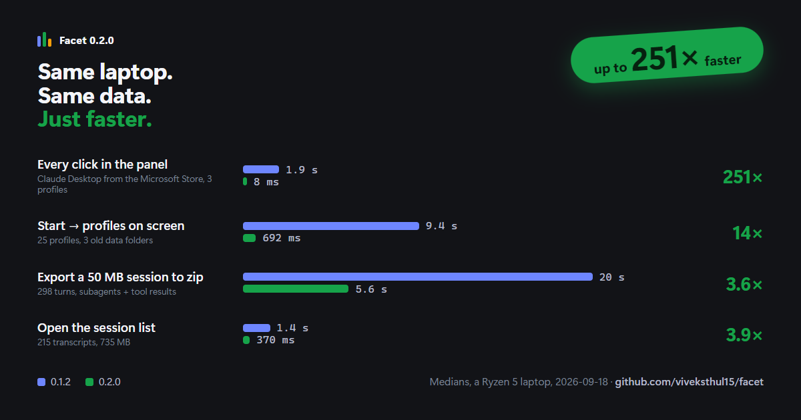

One identity.
Many facets.
A tiny Windows tray launcher that opens Claude Desktop on the right account, every time. Work, personal, client — each in its own data directory. Sign in once per profile; sessions stay put.
Download for Windows Source on GitHubThe whole trick
Claude Desktop is Electron. Point it at a per-profile data directory and each launch gets an independent session.
Claude.exe --user-data-dir="%LOCALAPPDATA%\Facet\profiles\claude-work"
- No token handling — Facet only chooses a directory and spawns a process.
- No network, ever. Zero analytics, zero update checks.
- Tray only. Alt+1…9 launches a profile; a global hotkey opens the panel.
Speed
Numbers, not adjectives.

Honest about what this is
Unofficial personal-productivity utility. Not affiliated with, endorsed by, or supported by Anthropic. It launches the official Claude Desktop app you already have installed; it does not modify or repackage it. Running multiple accounts may be subject to your plan's terms.